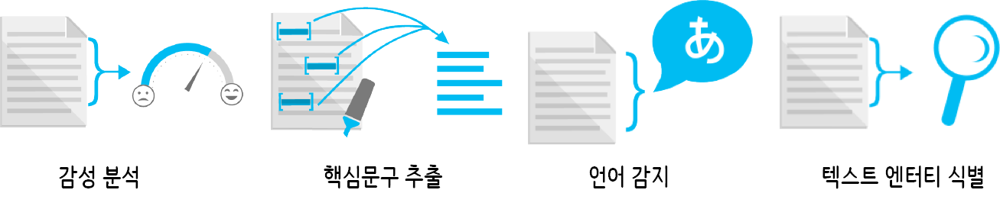

텍스트 분석
텍스트에서 정보 추출(Text Analytics API)를 통해 텍스트에서 언어, 감정, 핵심 문구 및 엔터티를 식별한다.
- 감성 분석
- 텍스트 분석 API를 통해 0~1 사이의 숫자 점수를 반환
- 점수가 1에 가까울수록 긍정적 감정을 나타내고 점수가 0에 가까울수록 부정적 감정을 표출.
- 분류자 입력 기능으로 N-그램, 음성 부분 태그에서 생성된 기능 및 단어 포함이 포함.
- 한국어는 현재(2018-05-17) 핵심문구(key phrase) 만 지원(언어별 지원현황 참조)
- 핵심 문구 추출
- 입력 텍스트의 핵심 요지를 나타내는 문자열 목록을 반환.
- 언어 감지
- 검색된 언어 및 0~1 사이의 숫자 점수를 반환. 점수가 1에 가까울수록 식별된 언어가 확실하다는 표시하며
true인 경우 100% 확실성을 표현함.
- 텍스트에서 엔터티 식별 미리 보기
- 조직, 사람, 위치 등 텍스트에서 모든 명명된 엔터티를 검색. 예를 들어, 엔터티 링크 설정을 사용하여 “times” 등의 용어가 “The New York Times” 또는 “Times Square”를 가리키는지 확인.

텍스트 번역
What languages does Microsoft Translator support?를 참조하면 현재(2018-05-17) 시점 한국어 지원 사항을 파악할 수 있다.
- Text Translation(텍스트 번역): 지원
- Speech Translation(음성 번역): 비지원
- Text to speech(텍스트를 음성변환): 지원
- Neural Translation(신경망 번역): 지원
- Transliteration(바꿔 씀, 음역): 비지원
- Dictionary(사전): 지원
영어, 중국어, 일본어는 상기 6가지 기능을 모두 지원함.